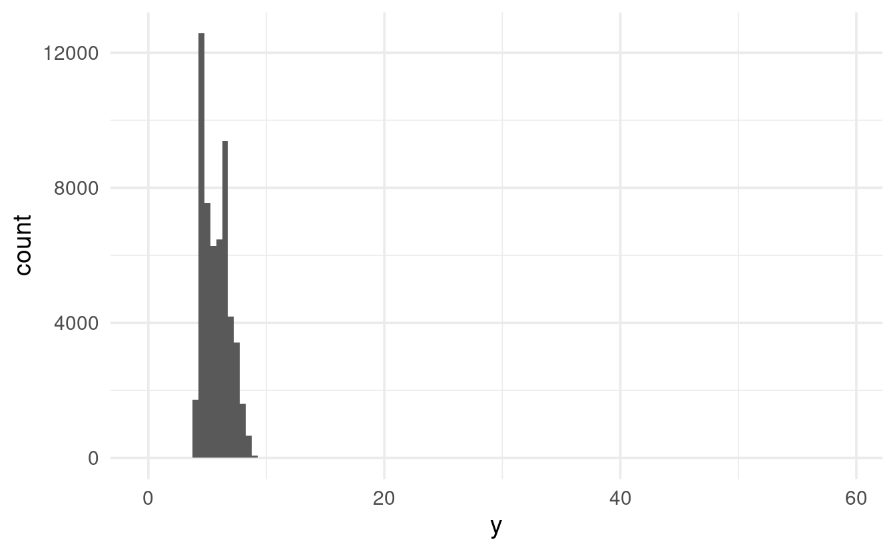
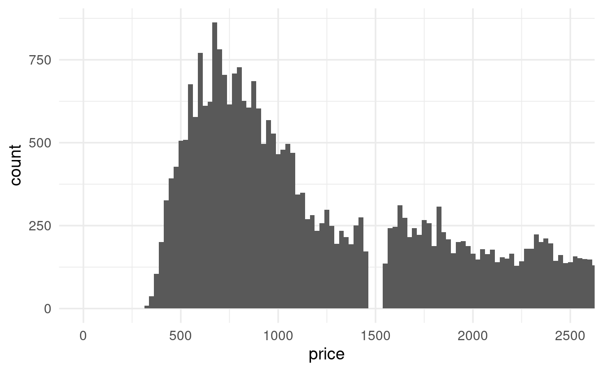
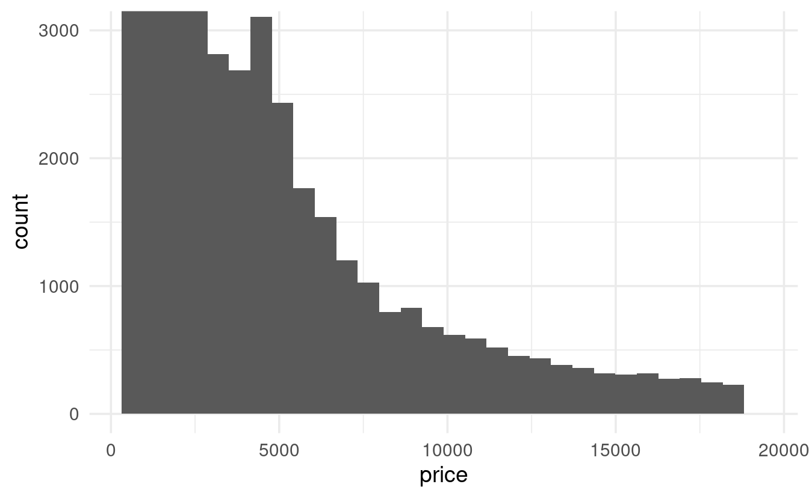
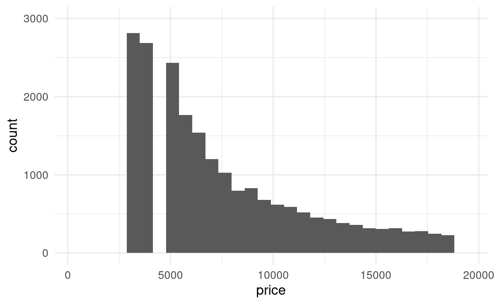
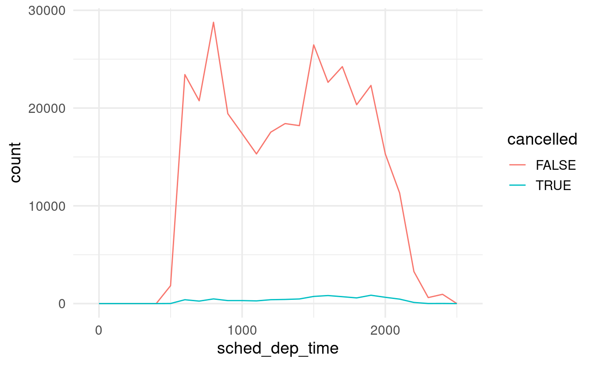
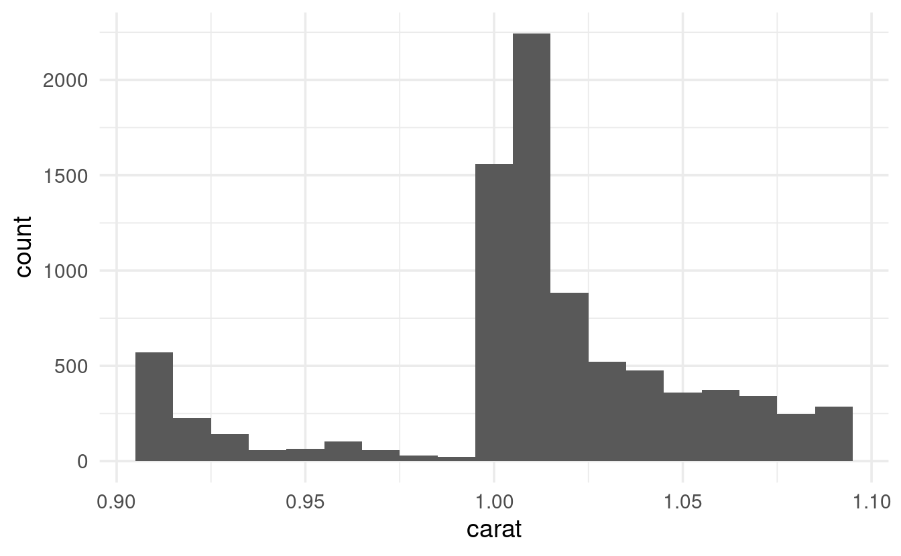

S04E15: R for Data Science - Exploratory Data Analysis
Chapter 7.3 - 7.4: Plotting the distributions of categorical and continuous variables
Setting up
Today, we’ll only need to load the tidyverse, as we’ll work with datasets that are automatically loaded along with it.
## You only need to install if you haven't previously done so
# install.packages("tidyverse")
library(tidyverse)We’ll mostly explore the diamonds dataset, so let’s take a quick look at it before we begin:
head(diamonds)
#> # A tibble: 6 × 10
#> carat cut color clarity depth table price x y z
#> <dbl> <ord> <ord> <ord> <dbl> <dbl> <int> <dbl> <dbl> <dbl>
#> 1 0.23 Ideal E SI2 61.5 55 326 3.95 3.98 2.43
#> 2 0.21 Premium E SI1 59.8 61 326 3.89 3.84 2.31
#> 3 0.23 Good E VS1 56.9 65 327 4.05 4.07 2.31
#> 4 0.29 Premium I VS2 62.4 58 334 4.2 4.23 2.63
#> 5 0.31 Good J SI2 63.3 58 335 4.34 4.35 2.75
#> 6 0.24 Very Good J VVS2 62.8 57 336 3.94 3.96 2.48On each row, we have information about one individual diamond, such as its carat and price. Note that x, y, and z represent the diamond’s length, width, and depth, respectively.
Since we’ll be making a bunch of plots with ggplot2, let’s use the following trick to set an overarching “theme” for all plots that is a little better-looking than the default one:
# This changes two things:
# - theme_minimal() gives an overall different look, with a white background
# - base_size = 14 will make the text relatively bigger
theme_set(theme_minimal(base_size = 14))Chapter 7.3: Variation
Exploring variation in a categorical variable
Let’s say we want to see how many diamonds there are for each value of cut. When we printed the first lines of the dataframe above, we could see that cut has values like Ideal, Premium, and Good: this is therefore a “categorical” and not a “continuous” variable.
We could also see that the data type indication for cut was <ord>, which is short for ordered factor. In R, categorical variables can be represented not just as character strings or integers, but also as factors. Factors have a defined set of levels (e.g. the levels Ideal or Premium for the factor cut), and those levels can be given a custom order. That is handy when plotting or when you need to set a reference level in a model. (For more, see this Code Club page on factors)
To quickly see which cut can take on and what their frequencies are, we can use count():
diamonds %>% count(cut)
#> # A tibble: 5 × 2
#> cut n
#> <ord> <int>
#> 1 Fair 1610
#> 2 Good 4906
#> 3 Very Good 12082
#> 4 Premium 13791
#> 5 Ideal 21551Making a barplot of different cut frequencies might also be useful. Recall that when making a plot with ggplot2, we at least need the following components:
-
The
ggplot()function, in which we supply the dataframe that we want to use. -
A geom function, which is basically the type of plot we want to make, such as
geom_point()for a scatterplot andgeom_bar()for a barplot. -
An “aesthetic mapping” that defines which variables (columns) to plot along the x-axis, y-axis, and/or to map colors or shapes too.
For a barplot showing cut, our ggplot2 code would look as follows:
We typically specify what should go along the y-axis, too, when making plots. But that is not the case for bar plots, where the default is to plot a count which is computed from the data.
Exploring variation in a continuous variable
To explore variation in a continuous variable like carat, a histogram is a classic approach – we can make one using geom_histogram():
ggplot(data = diamonds) +
geom_histogram(mapping = aes(x = carat))
Under the hood, a histogram discretizes the continuous data into bins, and then shows the counts (here: number of diamonds) in each bin. We may want to play around with the width of the bins to see more fine-grained or coarse-grained patterns, and can do so using the binwidth argument:
ggplot(data = diamonds) +
geom_histogram(mapping = aes(x = carat), binwidth = 0.5)

If we wanted to see this kind of representation in table-form, we can use the ggplot2 function cut_width, in which the width argument does the same thing as geom_histogram’s binwidth:
diamonds %>%
mutate(carat_discrete = cut_width(carat, width = 0.5)) %>%
count(carat_discrete)
#> # A tibble: 11 × 2
#> carat_discrete n
#> <fct> <int>
#> 1 [-0.25,0.25] 785
#> 2 (0.25,0.75] 29498
#> 3 (0.75,1.25] 15977
#> 4 (1.25,1.75] 5313
#> 5 (1.75,2.25] 2002
#> 6 (2.25,2.75] 322
#> 7 (2.75,3.25] 32
#> 8 (3.25,3.75] 5
#> 9 (3.75,4.25] 4
#> 10 (4.25,4.75] 1
#> 11 (4.75,5.25] 1If we want to show the variation for different levels of cut separately but all in one graph, we can simply provide a variable to map to fill, which is the fill color of the bars:
## First let's subset the data to a subset of relatively small diamonds
smaller <- diamonds %>% filter(carat < 3)
## Then, we make the plot
ggplot(data = smaller,
mapping = aes(x = carat, fill = cut)) +
geom_histogram(binwidth = 0.1, color = "grey20")
Though in such cases, a linegraph with geom_freqpoly() might be easier to interpret:
ggplot(data = smaller,
mapping = aes(x = carat, colour = cut)) +
# I'm making the lines thicker than the default with 'size'
geom_freqpoly(binwidth = 0.1, size = 1.5)
Unusual values
Sometimes, plots like histograms have very wide axis limits yet no visible bars on the sides of the plot:
ggplot(diamonds) +
geom_histogram(mapping = aes(x = y), binwidth = 0.5)

The x-axis limits are automatically picked based on the data, so there really should be some values all the way up to about 60. We just can’t see them, since the y-axis scale goes all the way up to 12 thousand.
If we want to see these counts in the graph, we can zoom in on the y-axis with coord_cartesian():
ggplot(diamonds) +
geom_histogram(mapping = aes(x = y), binwidth = 0.5) +
coord_cartesian(ylim = c(0, 50)) # c(<lower-limit>, <upper-limit>)
Note that in ggplot2, zooming in on a graph and setting axis limits isn’t the same thing: you’ll learn more about that in the exercises.
Of course we could also try to find these values in the dataframe itself, which might be more useful than a graph in cases like this. To do so, we can use the filter() function we learned about in the previous chapter:
diamonds %>% filter(y < 3 | y > 20)
#> # A tibble: 9 × 10
#> carat cut color clarity depth table price x y z
#> <dbl> <ord> <ord> <ord> <dbl> <dbl> <int> <dbl> <dbl> <dbl>
#> 1 1 Very Good H VS2 63.3 53 5139 0 0 0
#> 2 1.14 Fair G VS1 57.5 67 6381 0 0 0
#> 3 2 Premium H SI2 58.9 57 12210 8.09 58.9 8.06
#> 4 1.56 Ideal G VS2 62.2 54 12800 0 0 0
#> 5 1.2 Premium D VVS1 62.1 59 15686 0 0 0
#> 6 2.25 Premium H SI2 62.8 59 18034 0 0 0
#> 7 0.51 Ideal E VS1 61.8 55 2075 5.15 31.8 5.12
#> 8 0.71 Good F SI2 64.1 60 2130 0 0 0
#> 9 0.71 Good F SI2 64.1 60 2130 0 0 0Breakout Rooms
These exercises will continue to use the diamonds data, which is automatically loaded when you load the tidyverse.
Exercise 1
In the diamonds data, explore the distribution of price, which is the price of a diamond in USD. Do you discover anything unusual or surprising?
Make sure to try different values for the binwidth argument!
Hints (click here)
-
This is a continuous variable, so use
geom_histogram(). -
A more fine-grained plot (smaller bins with
binwidth) than the default should reveal something odd. -
You might want to use
coord_cartesian()to see the area with the odd pattern in more detail. (Alternatively, you could tryfilter()ing the data before plotting.)
Solution (click here)
geom_histogram()with default settings doesn’t reveal anything too weird, except perhaps the bump just below 5,000:
ggplot(data = diamonds,
mapping = aes(x = price)) +
geom_histogram()
- But with a binwidth of e.g. 100, we start to see something odd: a gap in the distribution.
ggplot(data = diamonds,
mapping = aes(x = price)) +
geom_histogram(binwidth = 100)
- Let’s take a closer look by zooming in on prices of $2,500 or less:
diamonds %>%
ggplot(mapping = aes(x = price)) +
geom_histogram(binwidth = 25) +
coord_cartesian(xlim = c(0, 2500))

(An alternative approach would be to filter the data before plotting:)
Exercise 2
Compare coord_cartesian() vs the superficially similar lims() when zooming in vertically on a histogram. Specifically, make two histograms of price with a y-axis that only goes up to 3000: one with coord_cartesian(ylim = ...) and one with lims(y = ...).
What is happening in the graph made with lims()? (See the hint for example usage of lims(), a function we haven’t seen yet.)
Hints (click here)
You can use lims to set arbitrary axis limits:
ggplot(diamonds) +
geom_point(mapping = aes(x = x, y = y)) +
lims(x = c(5, 10), # c(<lower-limit>, <upper-limit>)
y = c(0, 20)) # c(<lower-limit>, <upper-limit>)
#> Warning: Removed 17593 rows containing missing values (geom_point).(Whereas with default axis limits, the plot would look like this:)
ggplot(diamonds) +
geom_point(mapping = aes(x = x, y = y))

Solution (click here)
Whereas the graph produced with coord_cartesian() is simply “cut off” at the specified limit, the graph produced with lims() is missing bars!
It turns out that ggplot2 removes the bars that can’t be shown given our y-limit. Notice that it warns us about doing so: #> Warning: Removed 5 rows containing missing values (geom_bar).
ggplot(diamonds) +
geom_histogram(mapping = aes(x = price)) +
coord_cartesian(ylim = c(0, 3000))

ggplot(diamonds) +
geom_histogram(mapping = aes(x = price)) +
lims(y = c(0, 3000))
#> Warning: Removed 5 rows containing missing values (geom_bar).
Exercise 3
Using scatterplots, explore the relationship between the depth y and the width z of the diamonds.
What do you think about the outliers? Are they more likely to be unusual diamonds or data entry errors?
Hints (click here)
-
Make a scatterplot with
geom_point(). -
Zoom in on the area with most points, to get a better feel for the overall relationship between
yandz. -
Could a diamond with a value of
ylarger than 20 just be a very large diamond? Or does the corresponding value forz, and the overall relationship betweenyandzmake it more likely that they are outliers?
Solution (click here)
Let’s start with a simple scatterplot with all data and default axis limits:
ggplot(data = diamonds,
mapping = aes(x = z, y = y)) +
geom_point()

Phew! There are definitely some striking outliers. Let’s zoom in on the main cloud of points:
ggplot(data = diamonds,
mapping = aes(x = z, y = y)) +
geom_point() +
coord_cartesian(xlim = c(0, 10), ylim = c(0, 15))
That looks like an overall very tight correlation between width (y) and depth (z).
Therefore, the outliers of y and z don’t just seem to represent very large or very small diamonds, and are likely data entry errors or something along those lines.
Chapter 7.4: Missing values
Removing outliers
If you’ve established that certain outliers are untrustworthy and want to get rid of them, you have two main options.
First, you could remove the rows (diamonds) with outliers:
But you may not want throw out rows in their entirety, because the other values might be valid and are still valuable. In that case, you can set outliers to NA (missing value), and a convenient way to do that is with the ifelse() function. To understand ifelse(), a simple example may help:
# Create a vector with integers from 1 to 10:
x <- 1:10
x
#> [1] 1 2 3 4 5 6 7 8 9 10# This will return a logical vector, indicating, for each value,
# whether it is smaller than 5:
x < 5
#> [1] TRUE TRUE TRUE TRUE FALSE FALSE FALSE FALSE FALSE FALSE# We can turn the small values into NAs, and leave big values unchanged, as follows:
ifelse(test = x < 5, yes = NA, no = 10)
#> [1] NA NA NA NA 10 10 10 10 10 10In case of the diamonds, we can use this function as follows to turn y outliers into NAs:
Comparing observations with and without missing data
Sometimes you may want to compare distributions among observations with and without missing values. To do that, we can create a new variable that indicates whether a value is missing or not, and map (for example) color to this variable:
nycflights13::flights %>%
mutate(cancelled = is.na(dep_time)) %>%
ggplot(mapping = aes(x = sched_dep_time, color = cancelled)) +
geom_freqpoly(binwidth = 100)

However, the large difference in the absolute counts of cancelled versus not-cancelled flights makes it hard to see relative differences along the x-axis.
We can use geom_density() to produce a density plot, where the height of the lines is only determined by the relative counts, and where we can see if cancelled flights have a different distribution:
nycflights13::flights %>%
mutate(cancelled = is.na(dep_time)) %>%
ggplot(mapping = aes(x = sched_dep_time, color = cancelled)) +
geom_density()

It looks like flights at the end of the day are much more commonly cancelled than those early on, which is what we might have expected!
Exercise 4 (bonus)
Explore the distribution of carat. Specifically, compare the number of diamonds of 0.99 (and a little less) carat and those of 1 (and a little more) carat? What do you think is the cause of the difference?
Hints (click here)
-
Make a histogram (
geom_histogram()) forcarat, and optionally zoom in to the area around 1. -
Use
filter()andcount()to specifically check out the diamond counts with a carat of around 1.
Solution (click here)
We can start by simply making a histogram for carat:
ggplot(data = diamonds,
mapping = aes(x = carat)) +
geom_histogram(binwidth = 0.01)
That’s a weird pattern, with a bunch of peaks and valleys! Let’s just show the area around a carat of 1:
diamonds %>%
filter(carat > 0.9, carat < 1.1) %>%
ggplot(mapping = aes(x = carat)) +
geom_histogram(binwidth = 0.01)

There’s clearly a big uptick around 1, but checking out the raw counts would make it easier to answer the original question:
diamonds %>%
filter(carat > 0.9, carat < 1.1) %>%
count(carat)
#> # A tibble: 19 × 2
#> carat n
#> <dbl> <int>
#> 1 0.91 570
#> 2 0.92 226
#> 3 0.93 142
#> 4 0.94 59
#> 5 0.95 65
#> 6 0.96 103
#> 7 0.97 59
#> 8 0.98 31
#> 9 0.99 23
#> 10 1 1558
#> 11 1.01 2242
#> 12 1.02 883
#> 13 1.03 523
#> 14 1.04 475
#> 15 1.05 361
#> 16 1.06 373
#> 17 1.07 342
#> 18 1.08 246
#> 19 1.09 287There are suspiciously few diamonds with a carat of 0.99 (and, to a lesser extent, with a carat anywhere above 0.9): could there be some rounding-up going on?